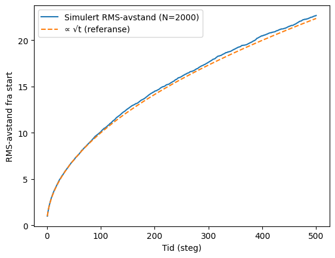
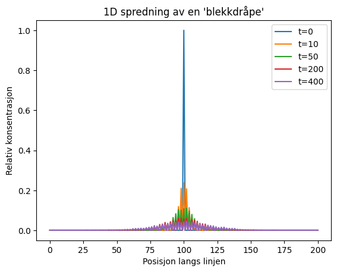
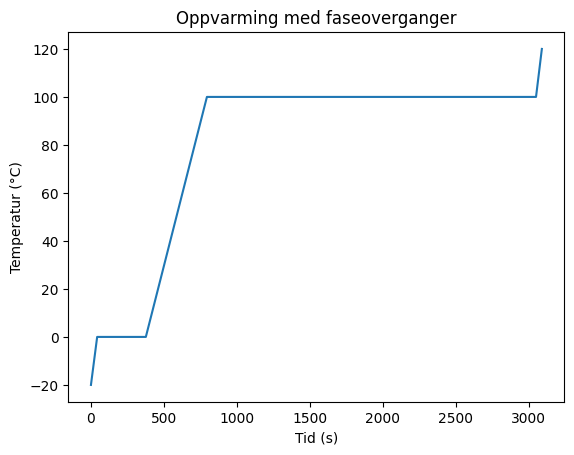

Kapittel 1: Hvorfor fysikalsk kjemi? – fra molekyler til verden rundt oss#
1.1 Hva er fysikalsk kjemi?#
Fysikalsk kjemi er læren om de grunnleggende kreftene og bevegelsene som styrer molekyler, og om hvordan summen av disse gir opphav til de egenskapene vi kan observere og måle.
Tenk etter
Hvilke typer krefter finnes innad og mellom atomer, molekyler og ioner?
Kan du nevne tre fenomener i hverdagen som kan forklares ved hjelp av sterke eller svake kjemiske bindinger?
1.2 Molekyler i bevegelse#
Et glass vann inneholder rundt 10^25 vannmolekyler. Hvert av dem beveger seg med en hastighet på flere hundre meter i sekundet.
Tenk etter
Hvis molekyler alltid er i bevegelse, hva betyr det da at et stoff har «0 K» temperatur?
Hva tror du skjer med trykket i en gass hvis temperaturen øker, men volumet er det samme?
1.3 Fra tilfeldighet til forutsigbarhet#
Kast en mynt én gang. Utfallet er tilfeldig. Kast den hundre ganger – andelen kron og mynt nærmer seg 50/50.
La oss teste med en enkel simulering av tilfeldig vandring («random walk»):
import numpy as np
import matplotlib.pyplot as plt
np.random.seed(0)
N = 2000
T = 500
step_size = 1.0
dirs = np.random.randint(0, 4, size=(T, N))
dx = (dirs == 1).astype(float) - (dirs == 3).astype(float)
dy = (dirs == 0).astype(float) - (dirs == 2).astype(float)
x = np.cumsum(dx * step_size, axis=0)
y = np.cumsum(dy * step_size, axis=0)
r2 = x**2 + y**2
r_rms = np.sqrt(np.mean(r2, axis=1))
t = np.arange(1, T+1)
theory = np.sqrt(t) * step_size
plt.plot(t, r_rms, label="Simulert RMS-avstand (N=2000)")
plt.plot(t, theory, "--", label="∝ √t (referanse)")
plt.xlabel("Tid (steg)")
plt.ylabel("RMS-avstand fra start")
plt.legend()
plt.show()

Tenk etter
Hvorfor vokser middelavstanden omtrent som √t selv om hver enkelt bane er «kaotisk»?
Hva skjer med kurven hvis du endrer antall partikler N?
1.4 Molekylære drivkrefter#
En dråpe blekk sprer seg i vann. La oss simulere dette med en enkel 1D diffusjonsmodell:
import numpy as np
import matplotlib.pyplot as plt
np.random.seed(2)
L = 201
steps = 400
particles = 5000
x = np.full(particles, L//2, dtype=int)
snapshots = [0, 10, 50, 200, 400]
plt.figure()
for t in range(steps+1):
if t in snapshots:
hist = np.bincount(x, minlength=L).astype(float)
hist /= np.sum(hist)
plt.plot(hist, label=f"t={t}")
moves = np.random.rand(particles) < 0.5
x[moves] -= 1
x[~moves] += 1
x = np.clip(x, 0, L-1)
plt.xlabel("Posisjon langs linjen")
plt.ylabel("Relativ konsentrasjon")
plt.title("1D spredning av en 'blekkdråpe'")
plt.legend()
plt.show()

Tenk etter
Hvorfor sprer blekket seg, men samler seg aldri spontant igjen?
Kan du nevne et biologisk eksempel som bygger på samme prinsipp?
1.5 Energi og stabilitet – en smakebit#
Når is smelter ved romtemperatur… La oss simulere en varmekurve:
import numpy as np
import matplotlib.pyplot as plt
m = 0.1
c_solid, c_liquid, c_gas = 2100, 4180, 2000
T_melt, T_boil = 0.0, 100.0
L_fus, L_vap = 334000, 2256000
Qdot = 100.0
dt = 0.2
T0 = -20.0
T_max = 120.0
state = 0
T = T0
Q_latent_left = 0.0
times, temps = [], []
t = 0.0
while T < T_max:
times.append(t)
temps.append(T)
Q_in = Qdot * dt
if state == 0:
if T < T_melt:
dT = Q_in / (m * c_solid)
T = min(T + dT, T_melt)
Q_in = 0
if T >= T_melt:
state = 1
Q_latent_left = m * L_fus
if state == 1:
if Q_latent_left > 0:
dq = min(Q_in, Q_latent_left)
Q_latent_left -= dq
Q_in -= dq
T = T_melt
else:
if T < T_boil:
dT = Q_in / (m * c_liquid)
T = min(T + dT, T_boil)
Q_in = 0
if T >= T_boil:
state = 2
Q_latent_left = m * L_vap
if state == 2:
if Q_latent_left > 0:
dq = min(Q_in, Q_latent_left)
Q_latent_left -= dq
Q_in -= dq
T = T_boil
else:
dT = Q_in / (m * c_gas)
T += dT
t += dt
plt.plot(times, temps)
plt.xlabel("Tid (s)")
plt.ylabel("Temperatur (°C)")
plt.title("Oppvarming med faseoverganger")
plt.show()

Tenk etter
Hvorfor står temperaturen stille i platåene selv om vi tilfører varme?
Hva slags energi går med til å smelte is?
1.6 Et helhetlig eksempel: vann som case#
Vann kombinerer alt vi har sett: molekylære bindinger, makroskopiske egenskaper, og symbolske ligninger.
Tenk etter
Hva er forskjellen på å forklare «is smelter» på molekylnivå, makronivå og symbolnivå?
Hvilken forklaring opplever du som mest tilfredsstillende?
1.7 Oppsummering#
I dette kapittelet har vi sett at molekyler er i konstant, tilfeldig bevegelse, men at summen gir forutsigbare mønstre.
Tenk etter
Hvordan kan fysikalsk kjemi forklare både dagligdagse fenomener og avanserte prosesser?